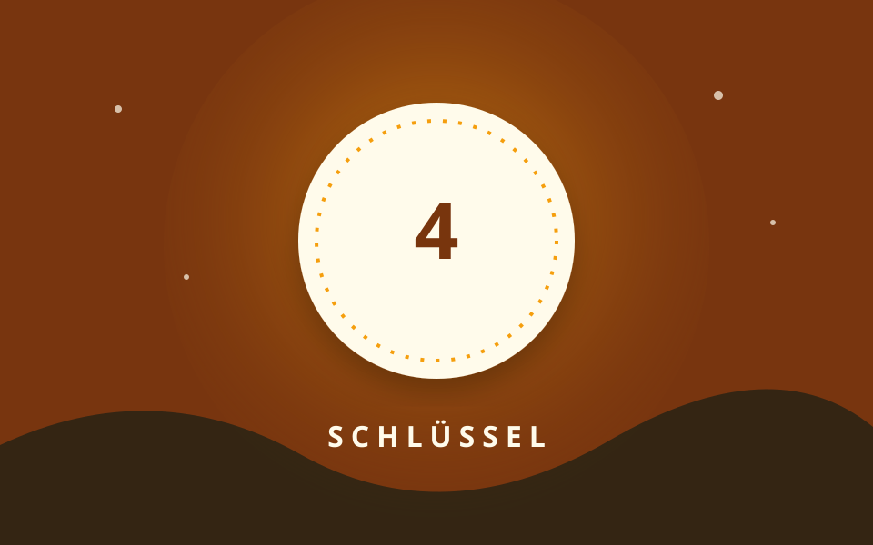

Station 4 von 5

Der eiserne Bart
Ich habe Zähne, doch beiße ich nie. Dreht man mich richtig, öffne ich sie.
Eure Aufgabe
Welcher Gegenstand ist gemeint?
Tipp anzeigen
Man trägt mich oft an einem Ring.
Station 4 von 5

Ich habe Zähne, doch beiße ich nie. Dreht man mich richtig, öffne ich sie.
Welcher Gegenstand ist gemeint?
Man trägt mich oft an einem Ring.